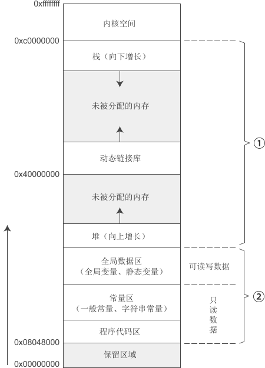

大白话聊内存泄漏（一看就懂）
内存泄露是一个比较基础，也比较古老的话题，它是指程序中的无用内存持续堆积，但是又没有得到及时释放，从而导致程序内存占用过高，拖慢了运行速度，如果问题严重的话，程序还可能直接卡死。
当然，其它程序以及操作系统也会跟着遭殃，都会因为计算机内存资源的耗尽而变成蜗牛，一动不动。
解决内存泄露的办法也非常简单，就是退出程序，然后重启！
不过对于服务器上的程序，或者计算机的底层组件，频繁地重启是无法接受的，那将导致工作暂停，或者服务中断。所以，大量的内存泄露是一个非常严重的 Bug，我们必须要足够重视，并且着手解决。
在了解内存泄露之前，我们先来看一下程序的内存布局。下图是 32 位 Linux 系统下一个进程的内存分段示意图。
在 32 位环境下，一个程序占用 4GB 的内存，其中「内核空间」是被操作系统占用的，我们没法直接干预；「保留区域」也不用来存储数据，只用作一些特殊目的，比如，你可以让空指针指向这里。
除了这两个区域，剩下的那些内存才是被我们自己编写的程序所占用的，也就是图中的①和②两个部分，这其中：
在第①部分中，有一个分段叫做堆（Heap），这才是我们能够随意操作的内存，你可以随时分配，也可以随时释放，属于真正的自由空间。
操作系统不会干预堆区内存，我们只能自己手动管理，如果我们分配了一段内存，后来它用完了，但是我们却没有及时释放，这个时候就会发生内存泄露。
被泄露的内存，在程序运行期间会一直存在，并且会持续积累，直到程序运行结束后才会被操作系统一次性回收。
除了堆区，其它区域的内存都由操作系统管理，要么用完即毁，要么一直存在，从来不会发生内存泄露。
还记得C语言中的 malloc() 和 free() 函数吧，它们就是在堆上分配和释放内存。
下面让我们看一段内存泄露的代码：
这个时候你会发现，内存块2没有指针指向它了！
这意味着，我们永远无法知道内存块2的地址了，它就像消失在堆区的海洋里一样，再也找不到了，再也没法释放了。然而，它又实实在在地存在于堆区之中，不能被其它数据占用。
这种内存丢失，就是一种典型的内存泄露。
上面的代码比较简单，有经验的程序员可以轻松应对，但是在实际开发中，函数之间的调用关系非常复杂，有时候你搞不清应该在什么地方释放内存，所以你干脆就不释放了。
虽然这块内存没有丢失，但是你没有及时释放，它也会成为垃圾内存，随着程序的运行而持续堆积。这也是内存泄露的一种常见情况。
搞清楚了内存泄露的概念，你会发现，内存泄露并不是一种错误，只是一种由于管理不善而导致的潜在隐患。
如果内存泄露的不多，比如只有 10KB，或者 30MB，那么它就不会影响程序运行，问题就不算严重，甚至你都发现不了。有一些比较宽松的公司，可能压根都不把它当做一个问题。
只有当内存泄漏的足够多了，比如 1GB，或者3GB，这个时候才会影响程序运行，我们才必须要去解决。
内存泄露是 C/C++ 中最难发现和解决的 Bug，即使非常有经验的程序员，也不能保证自己的程序没有内存泄露。
帮助解决内存泄露的办法有很多，比如 Valgrind、Windbg、Address Sanitizer（ASan）内存分析工具，以及 mtrace()、ccmalloc() 函数等，但是它们也只能解决一些常见的问题，对于那些复杂或者罕见的问题往往也力不从心。
另外，它们还比较考验程序员的功力，并不是傻瓜式操作。
总之，内存泄露是一个困扰 C/C++ 程序员多年的问题，它无法彻底根治，只能去尽力避免。
后来的很多高级语言，比如 Java、Python、JavaScript、C#、PHP、Go 等，都增加了垃圾内存回收机制，这从根本上避免了内存泄露，程序员再也不用担心内存问题了。
不过垃圾内存回收是有代价的，你需要对内存进行标记，并及时改变它的值，另外还需要额外增加一个线程或者进程，对内存进行实时监控，发现没用的内存就及时回收。
当然，其它程序以及操作系统也会跟着遭殃，都会因为计算机内存资源的耗尽而变成蜗牛，一动不动。
解决内存泄露的办法也非常简单，就是退出程序，然后重启！
不过对于服务器上的程序，或者计算机的底层组件，频繁地重启是无法接受的，那将导致工作暂停，或者服务中断。所以，大量的内存泄露是一个非常严重的 Bug，我们必须要足够重视，并且着手解决。
在了解内存泄露之前，我们先来看一下程序的内存布局。下图是 32 位 Linux 系统下一个进程的内存分段示意图。

在 32 位环境下，一个程序占用 4GB 的内存，其中「内核空间」是被操作系统占用的，我们没法直接干预；「保留区域」也不用来存储数据，只用作一些特殊目的，比如，你可以让空指针指向这里。
除了这两个区域，剩下的那些内存才是被我们自己编写的程序所占用的，也就是图中的①和②两个部分，这其中：
- ② 在程序运行期间会一直存在，直到程序销毁才能被释放；
- ① 在程序运行期间会不断变化，它被不断地分配和释放。
在第①部分中，有一个分段叫做堆（Heap），这才是我们能够随意操作的内存，你可以随时分配，也可以随时释放，属于真正的自由空间。
操作系统不会干预堆区内存，我们只能自己手动管理，如果我们分配了一段内存，后来它用完了，但是我们却没有及时释放，这个时候就会发生内存泄露。
被泄露的内存，在程序运行期间会一直存在，并且会持续积累，直到程序运行结束后才会被操作系统一次性回收。
除了堆区，其它区域的内存都由操作系统管理，要么用完即毁，要么一直存在，从来不会发生内存泄露。
还记得C语言中的 malloc() 和 free() 函数吧，它们就是在堆上分配和释放内存。
下面让我们看一段内存泄露的代码：
#include刚开始 pOld 和 pNew 指向两块不同的内存，但是把 pOld 赋值给 pNew 以后，它们就都指向内存块1了。#include int main(){ int *pOld = (int*) malloc( sizeof(int) ); //内存块1 int *pNew = (int*) malloc( sizeof(int) ); //内存块2 pNew = pOld; //free(pOld)和free(pNew)只能调用一个 free(pOld); //free(pNew); return 0; }
这个时候你会发现，内存块2没有指针指向它了！
这意味着，我们永远无法知道内存块2的地址了，它就像消失在堆区的海洋里一样，再也找不到了，再也没法释放了。然而，它又实实在在地存在于堆区之中，不能被其它数据占用。
这种内存丢失，就是一种典型的内存泄露。
上面的代码比较简单，有经验的程序员可以轻松应对，但是在实际开发中，函数之间的调用关系非常复杂，有时候你搞不清应该在什么地方释放内存，所以你干脆就不释放了。
虽然这块内存没有丢失，但是你没有及时释放，它也会成为垃圾内存，随着程序的运行而持续堆积。这也是内存泄露的一种常见情况。
搞清楚了内存泄露的概念，你会发现，内存泄露并不是一种错误，只是一种由于管理不善而导致的潜在隐患。
如果内存泄露的不多，比如只有 10KB，或者 30MB，那么它就不会影响程序运行，问题就不算严重，甚至你都发现不了。有一些比较宽松的公司，可能压根都不把它当做一个问题。
只有当内存泄漏的足够多了，比如 1GB，或者3GB，这个时候才会影响程序运行，我们才必须要去解决。
内存泄露是 C/C++ 中最难发现和解决的 Bug，即使非常有经验的程序员，也不能保证自己的程序没有内存泄露。
帮助解决内存泄露的办法有很多，比如 Valgrind、Windbg、Address Sanitizer（ASan）内存分析工具，以及 mtrace()、ccmalloc() 函数等，但是它们也只能解决一些常见的问题，对于那些复杂或者罕见的问题往往也力不从心。
另外，它们还比较考验程序员的功力，并不是傻瓜式操作。
总之，内存泄露是一个困扰 C/C++ 程序员多年的问题，它无法彻底根治，只能去尽力避免。
后来的很多高级语言，比如 Java、Python、JavaScript、C#、PHP、Go 等，都增加了垃圾内存回收机制，这从根本上避免了内存泄露，程序员再也不用担心内存问题了。
不过垃圾内存回收是有代价的，你需要对内存进行标记，并及时改变它的值，另外还需要额外增加一个线程或者进程，对内存进行实时监控，发现没用的内存就及时回收。
关注公众号「站长严长生」，在手机上阅读所有教程，随时随地都能学习。内含一款搜索神器，免费下载全网书籍和视频。

微信扫码关注公众号